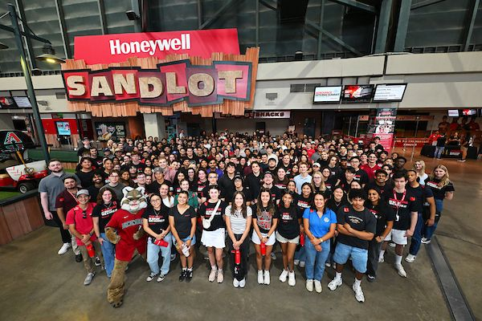
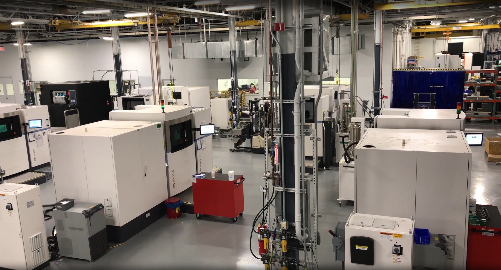
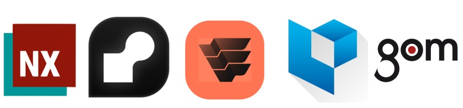
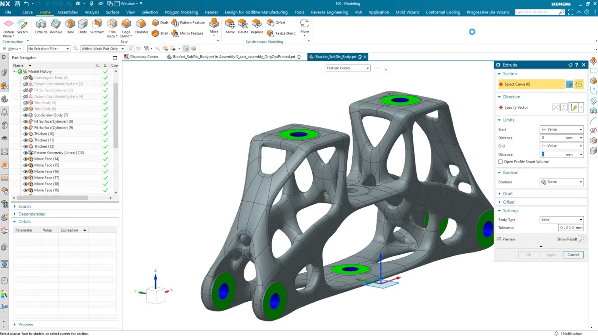
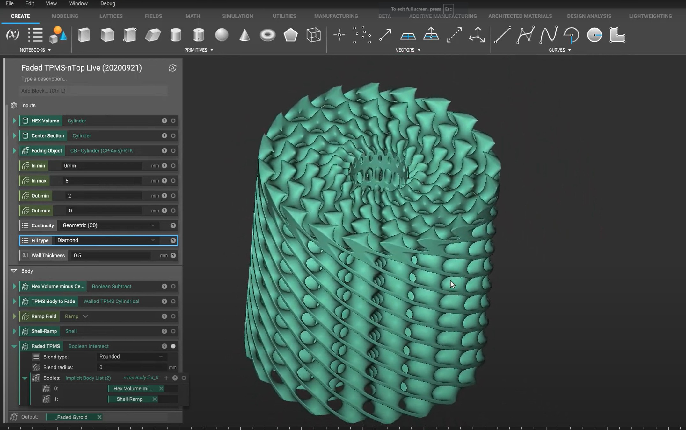
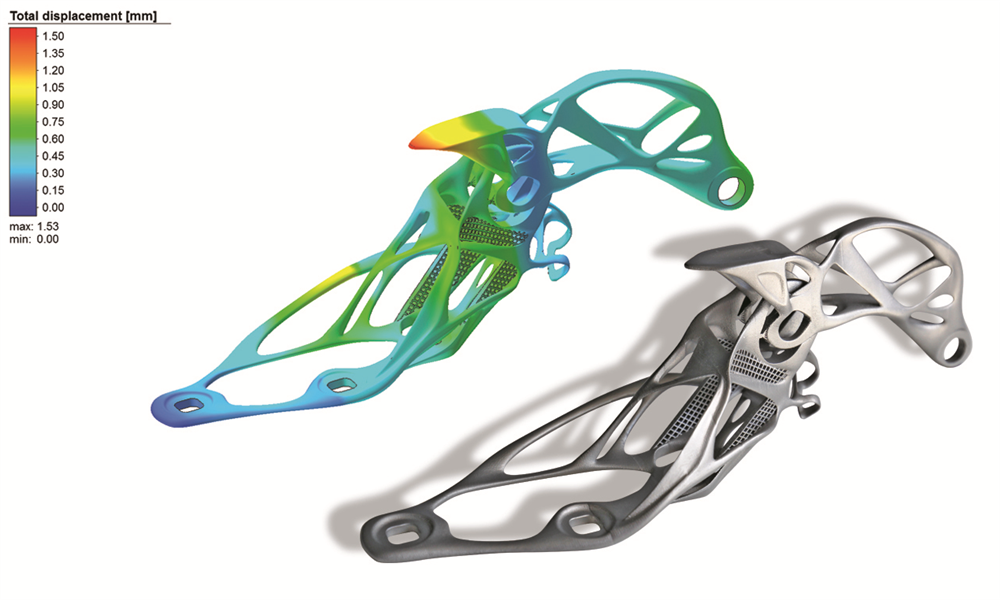
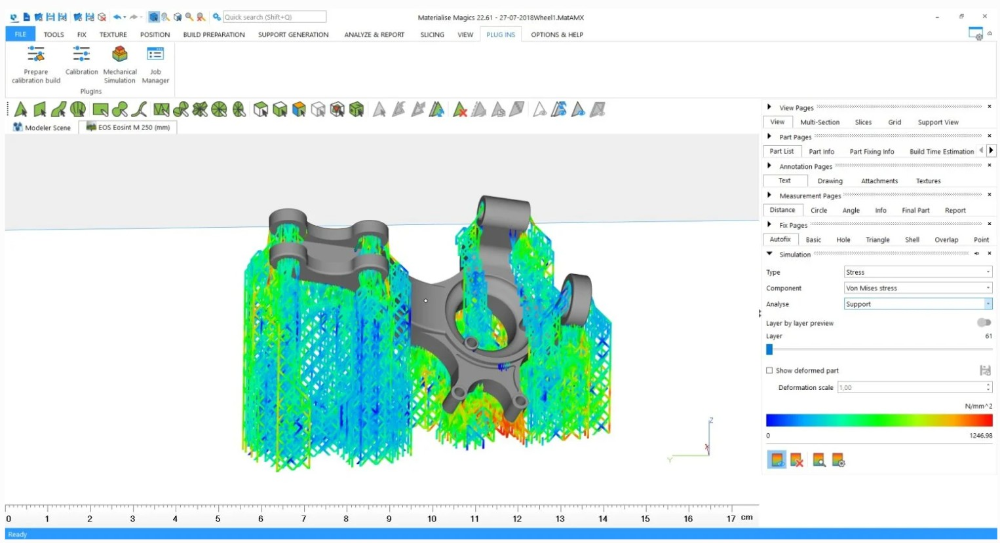
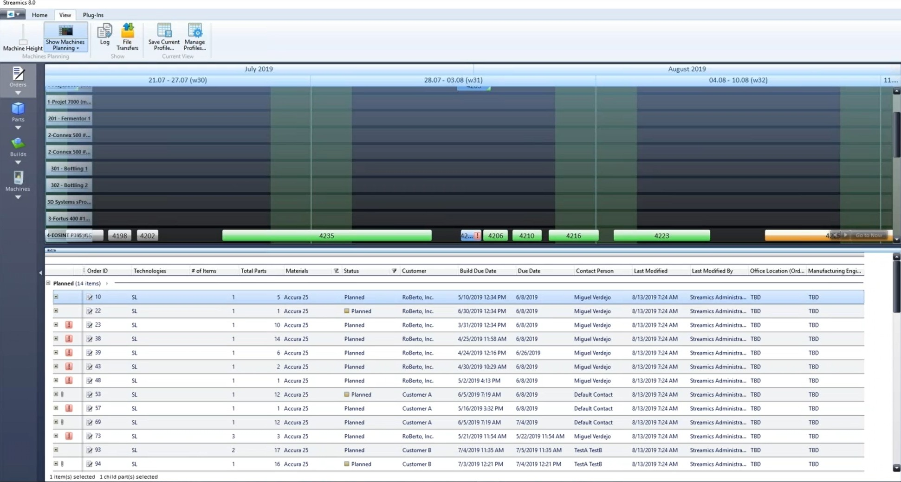
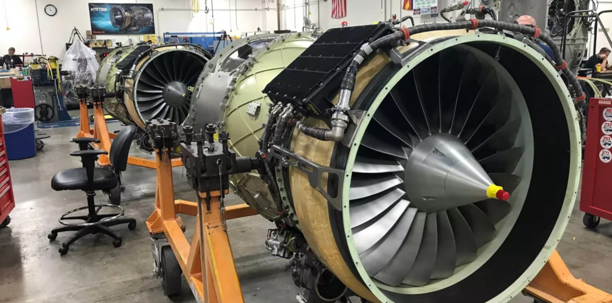

Projects
Mechanical Design Engineer Internship @ Honeywell Aerospace
Portfolio
Interning @ Honeywell Engines Facility

Picture: All Honeywell Aerospace Summer 2025 Interns
During the summer of 2025, I worked at Honeywells Phoenix Engines facility as part of the Additive Manufacturing (AM) Design team. Our group supported the design and production of metal 3D-printed aerospace parts.

Picture: Additive Manufacturing Technology Center, Honeywell Aerospace Phoenix Engines Facility
AM Design Workflow
Though small in size, our team gave me broad exposure to the entire AM pipeline, from CAD design to validation. The workflow typically followed these stages:

Picture: AM Design Software Workflow | Siemens NX (1st), nTop (2nd), Simufact Additive (3rd), Materialise Magics (4th), GOM Inspect (5th)
We'd typically start with Siemens NX, using it to generate CAD geometry and technical drawings. This also includes steps inside Teamcenter for proper part and drawing classification, per Honeywell's internal design guidelines.

Picture: Siemens NX User Interface
Depending on the part, we may also integrate nTop to fully unleash the design capabilities of additive manufacturing. This includes application of TPMS or lattice structures, topology optimization, or simply remeshing.

Picture: nTop User Interface
Then we move into Simufact Additive, where we can simulate residual stress and distortion during printing and post processing (e.g. heat treatments), then precompensate the geometry to account for it and end up with a nominally toleranced part.

Picture: Simufact Additive User Interface
Next comes Materialise Magics. It has powerful diagnostics tools that can highlight mesh defects (e.g. shells or overlapping triangles) that can cause print failure. We can also generate support structures like block or e-Stage (similar to resin supports) automatically.

Picture: Materialise Magics User Interface
Now we move forward into Streamics. This is more of a manufacturing tool than it is a design tool. But it's still important in that it's where we submit print requests that the manufacturing engineers manage directly.

Picture: Streamics User Interface
Finally, once the part has been printed, we make use of GOM Inspect. In conjunction with handheld 3D scanners, we can compare the nominal CAD geometry to 3D scans here for deviation analysis. This helps validate adherence to tolerances set in the drawings, informs the Simufact precompensation models, and more.

Picture: GOM Inspect (now ZEISS Inspect) User Interface
Lessons Learned:
Coming into this internship, I was a bit overconfident considering my experience with FDM and resin printing. Listed below are a handful of many lessons I learned during my internship that shaped my understanding of metal additive manufacturing moving forward:
- Choose Datums with Intent: Improperly selected datums, especially on additive surfaces prone to poor surface texture or warpage (e.g. downskins) can create downstream, compounding issues.
- Design with Distortion in Mind: While CAD presents the perfectly nominal geometry, the real world often does not. Be generous with your tolerances, where possible, so as to maintain functionality.
- Understand the role of AM: Additive manufacturing is powerful, no doubt, but it remains expensive and does not outright replace conventional processes.
- Plan for Post-Processing: Metal prints require intermittent post-processing steps like depowdering, heat treatment, wire EDM, and more. Anticipate these to avoid complications (e.g. clogged passages) later on.
- Prioritize Mesh Quality: A clean, high-quality mesh underpins the entire workflow. It drives the pre-compensation model in Simufact, accurate diagnostics in Magics, and ultimately the fidelity of the printed part.


Mechanical Subsystem Design
H
Recovery, Redundancy, and Contingency Plans
f
Manufacturing and Procurement
I
Verification
I validated designs through CMM inspections, FEA for structural loads, and thermal cycling tests, achieving TRL 7 for mechanical subsystems.
maybe unnecessary pix

Picture: HTF7000 Assembly Area, Honeywell Aerospace
- Delivered mission-ready designs for a 2030 lunar launch under $300M budget.
- Achieved TRL 7, enabling lunar pit exploration.
- Mastered CAD, FEA, and systems integration.
- Led a top-performing team, enhancing my aerospace expertise.